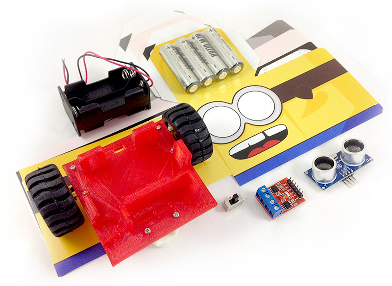

Webduino 公仔自走車 ( 電子材料包 )
Webduino 公仔自走車是 Webduino 自主研發的產品，可以完美搭配 Webduino 馬克 1 號開發板，車體使用 3D 印表機印製，馬達使用兩顆高扭力微型金屬減速馬達，以四顆 3A 電池作為動力輸出，產品內更附贈四組紙公仔造型，透過網頁技術可以實現「語音聲控」、「鍵盤操控」、「自動避障」...等各種有趣的控制方式，進階玩家更可以讓多台車互相連動，或結合行動裝置做出各種應用。( 本零件包內不含 Webduino 馬克 1 號 )
售價：
新台幣 1,365 元整 ( 已含稅，原價 1,575 )
點選「立刻購買」，將會前往 Webduino 露天賣場，貨運可以選擇「超商貨到付款」、「郵局包裹」、「7-11 取貨」模式，購買前請先 閱讀購買須知以及退換貨說明，歡迎政府機關、教育單位或公司行號採購，採購相關資訊請 來信 或來電 07-3388511 洽詢。
產品內容：
- 1. 公仔車車體 ×1 ( 已經和馬達、輪子、電池盒、馬達驅動晶片、超音波傳感器...等組裝完成 )
- 2. 高扭力微型金屬減速馬達 ×2
- 3. 輪子 ×2
- 4. 萬向輪 ×1
- 5. 馬達驅動晶片 ×1
- 6. 超音波傳感器 ×1
- 7. 開關 ×1
- 8. 紙公仔 ×4
- 9. 3A 電池 ×4 ( 照片廠牌僅供參考 )
產品照片：

Webduino 公仔自走車影片 ( 語音聲控五台自走車 )：
Webduino 馬克 1 號組裝後長相：
本零件包內不含 Webduino 馬克 1 號，和馬克 1 號的接法：超音波傳感器「 VCC 接 3.3V，trig 接 11，Echo 接 10，GND 接 GND」，馬達驅動晶片「VCC 接 VCC，B-B 接 6，B-A 接 7，A-B 接 8，A-A 接 9」

套用四種不同造型紙公仔：

購買須知 & 聲明：
當您透過 Webduino 的客服管道購買 Webduino 商品時，即表示您已詳細閱讀、明確瞭解並同意本 Webduino 出列舉注意事項之所有內容與規範。
閱讀相關內容 ( 點選展開 )
- 1. 若有報帳需求，請提供「公司抬頭」與「統一編號」，歡迎公司行號、教育單位與政府機關採購。
- 2. 我們會在每週一、四出貨，若您超過一個星期都尚未收到通知，麻煩與我們聯繫。
- 3. 數量超過 1 件請確認貨運金額 ( 沒問題的話應該只會計算一次運費 )，金額有誤請與我們聯繫。
- 4. 若收件地點為離島、國外...等非台灣本島地區，請與我們聯繫，確認相關運費與寄收件事宜。
- 5. Webduino 團隊針對消費者與個人資料之蒐集和運用，依中華民國「電腦處理個人資料保護法」， 除事先說明或依台灣法律規定外，不會擅自將您的個人資料提供給第三者或作為其他目的之用。
退換貨須知：
我們所提供的瑕疵與退換貨等售後服務，為收到商品的隔日起算的七日內（ 含例假日 ）。請您務必在收到商品時立即檢查商品，可以藉由教學實作的「初始化設定」以及「第一個範例」進行測試。
閱讀相關內容 ( 點選展開 )
- 1. 請確認商品內容、品項、數量和是否為瑕疵商品的退貨。
- 2. 退換貨商品請保持數樣與外觀完整，並且保持完整包裝。
- 3. 如欲退換貨的瑕疵商品，請於辦理退換貨的同時，將商品配件請一併寄回。
- 4. 若為人為操作造成的商品損壞，不在退換貨的範圍之內。
- 5. 若非為瑕疵品或錯誤商品，退貨的郵資需由購買者負擔。
- 6. 由於電子零件生產製程因素，可能邊緣會有輕微不平整、焊錫大小不同、黏著劑輕微不均勻的情形發生，均屬正常現象，這些不在我們列入的瑕疵商品，還請您見諒。
- 7. 訂單一旦成立並且付款完成，我們會盡速為您準備您的商品。服務期間若您對處理方式或狀況有疑問，歡迎與 Webduino 客服聯繫。
( 客服時間：週一至週五 09:30 ~ 18:00，Email： service@webduino.io，Facebook 粉絲團傳訊息，或來電 07-3388511 )